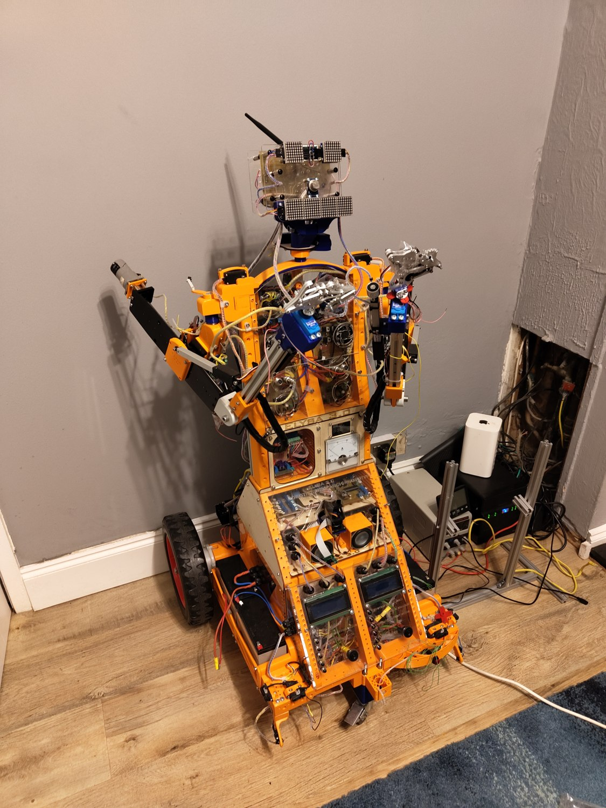
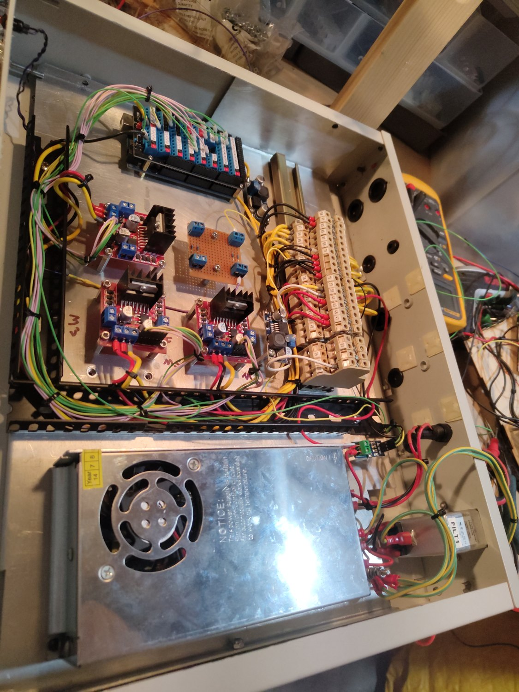

Classroom & club kits
Robots pitched at a group's level, from first-timers to competition builders, that survive being handled and rebuilt week after week.
// education STEM
Hands-on educational robots built to be programmed and controlled, and bespoke custom robots for one specific job — from classroom kits to industrial automation — plus the software to run them and the parts to build your own. Mechanics, electronics, software and components, all under one roof near Aztec West.
Learning kit that rewards curiosity, bespoke machines for a single job, and automation that earns its keep on the production floor. Jump straight to whichever you came for.
For schools, clubs and makers. A robust platform for learning to program and control.
Bespoke machines for a defined task — one-offs and small runs, built around the job.
Robotic cells, machine tending and process automation that run a job the same way every time.
The best learning robot is one a student can drive, sense and program — writing the code, watching the behaviour change, and building up to real autonomy. Ours are built for exactly that.
A robust, ready-to-run machine students learn to command — not one to take apart. The focus is control: drive it, read its sensors, program how it behaves. Then it grows with the learner — add a sensor and make it react, then hand over to a small autonomous routine (line following, obstacle avoidance, a little vision). Block-style or text coding on the same machine, with a live view of every sensor, all running on the robot itself.
When there's nothing off the shelf that fits, we design and build the one machine the job actually needs — and we do all of it: the frame, the moving parts, the boards and the software that ties them together.
Some jobs need exactly one machine. Others need a handful of identical ones. We take a task you describe in plain terms — move this, watch that, do the repetitive thing every time without fail — and turn it into a working robot, then make more if you need them. You own the design, the drawings and the code at the end of it.

The awkward part of custom robotics is where the disciplines meet: a motor that is right on paper but too heavy for the frame, firmware that has to know exactly how the joint moves. Because the mechanical design, the electronics and the control code all happen in the same place, those seams get sorted early instead of on delivery day.

When a job on the floor is done by hand over and over, we automate it — a self-contained robotic cell, a machine-tending arm, a line that runs itself — built to do the same thing the same way every shift, and to drop in alongside the equipment you already run.
Pick-and-place, sorting, feeding a machine, packing at the end of a line — the repetitive tasks that wear people down and slip when they're tired. We build the cell around the task: the arm or mechanism, the guarding, the sensing that knows when something's off, and the controls that run it — panel, PLC or PC, and an operator screen anyone on shift can use. Crucially, it talks to the machines and lines already on your floor rather than asking you to rip everything out, and it runs on-site so a dropped connection never stops production.
Two things people don't always expect: we'll write the software for hardware we didn't build, and we can supply the parts for you to build and maintain your own.
Firmware, motion control, vision and operator interfaces — written for your hardware, even if we didn't build it.
Motors, drivers, controllers, sensors and kits — sourced or made in-house, so you can build and repair your own.
New brains for an ageing machine — bring an old robot or rig back to life with modern control.
Whether it is a classroom kit or a one-off machine, the path is the same — and you can see it at every step, not just at the end.
We start with the job in plain language and work out what the robot really has to do, what would count as done, and where the hard parts are.
Mechanics, electronics and control approach are designed together, so the frame, the motors and the code agree before anything is cut.
We fabricate the mechanics, wire the electronics and assemble the machine, proving each subsystem as it goes on rather than at the end.
Control software, sensing, safety limits and the operator interface are written and tuned against the real hardware, not a simulation of it.
You get the drawings, the code and the spares, plus us on the end of the line. Because it is self-hosted, it stays yours to maintain.
A sense of the range. Each of these has been shaped around a specific setting rather than sold as a fixed product.
Robots pitched at a group's level, from first-timers to competition builders, that survive being handled and rebuilt week after week.
A classic first autonomy project done properly — clear sensors, honest wiring and code you can read, so the behaviour is understood, not magic.
Bespoke arms and grippers for pick-and-place, sorting and repetitive handling, with limits and an operator interface built in.
Wheeled and tracked platforms that carry cameras or sensors where a person would rather not go, and report back what they find.
Machines that watch, measure and react — reading a camera on the device itself so decisions happen locally, with nothing sent off to the cloud.
Small, self-contained machines that take one repetitive job off a person's hands and do it the same way every single time.
Tell us what it has to do. Whether it is a room full of learners or a single machine on a bench, we will design, build, program and support it, and you will own every part of it.
Start a project →